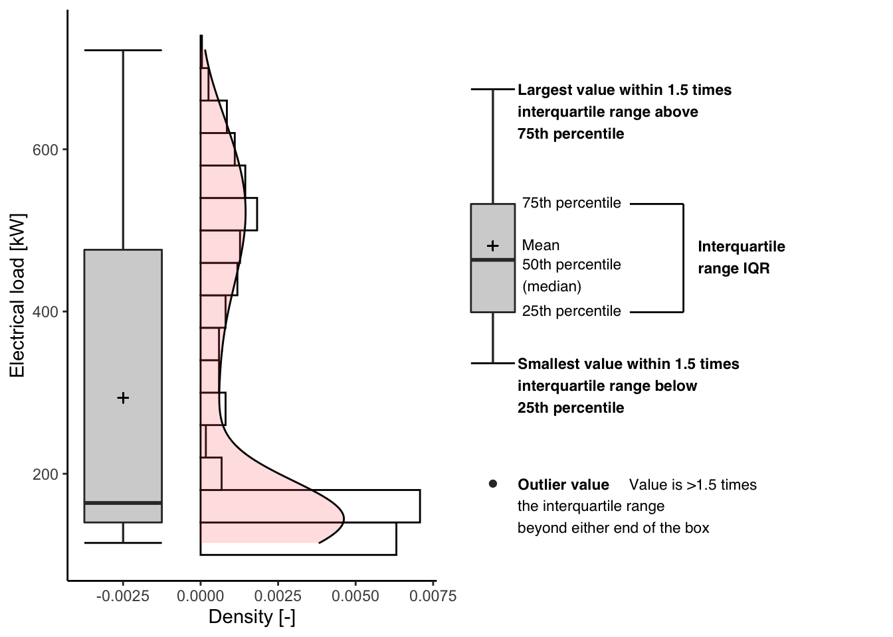

Chapter 1 Building related data
Data are usually described by a set of features also called variables, attributes or dimensions.
Categorical: Features whose values are taken from a defined set of values.
Numerical: Features whose values are continuous or integer-valued. They are represented by numbers and possess most of the properties of numbers.
continuous
discrete
categorical variables numerical variables
whole building
meter level
system level
dynamic
static
1.1 influencing variables
1.2 Time series
| Date_Time | Date | Time | min_dec | Day_Type | festivo | FasciaAEEG | Total_Power | DIMAT | Refrigeration_unit2 | Data_centre | Bar_Ambrogio | Canteen | Rectory | Print_shop | Allocated | Not_allocated | Week_Day | Month | Month_Day | Year | Year_Day | Hour | Minute |
|---|---|---|---|---|---|---|---|---|---|---|---|---|---|---|---|---|---|---|---|---|---|---|---|
| 2018-05-07 00:00:00 | 2018-05-07 | 00:00:00 | 0.00 | 1 | N | F23 | 140.0 | 3.6 | 2.4 | 37.6 | 6.0 | 15.6 | 8.0 | 0.4 | 73.6 | 66.4 | Lun | Mag | 7 | 2018 | 7 | 0 | 0 |
| 2018-05-07 00:15:00 | 2018-05-07 | 00:15:00 | 0.25 | 1 | N | F23 | 142.0 | 4.0 | 2.4 | 40.4 | 6.4 | 16.8 | 8.0 | 0.0 | 78.0 | 64.0 | Lun | Mag | 7 | 2018 | 7 | 0 | 15 |
| 2018-05-07 00:30:00 | 2018-05-07 | 00:30:00 | 0.50 | 1 | N | F23 | 140.8 | 3.6 | 2.0 | 39.6 | 6.0 | 18.4 | 8.4 | 0.4 | 78.4 | 62.4 | Lun | Mag | 7 | 2018 | 7 | 0 | 30 |
| 2018-05-07 00:45:00 | 2018-05-07 | 00:45:00 | 0.75 | 1 | N | F23 | 134.0 | 4.0 | 2.4 | 36.4 | 6.0 | 16.0 | 8.0 | 0.8 | 73.6 | 60.4 | Lun | Mag | 7 | 2018 | 7 | 0 | 45 |
| 2018-05-07 01:00:00 | 2018-05-07 | 01:00:00 | 1.00 | 1 | N | F23 | 139.6 | 3.6 | 2.4 | 42.0 | 6.0 | 16.8 | 8.0 | 0.4 | 79.2 | 60.4 | Lun | Mag | 7 | 2018 | 7 | 1 | 0 |
| 2018-05-07 01:15:00 | 2018-05-07 | 01:15:00 | 1.25 | 1 | N | F23 | 140.8 | 3.6 | 2.0 | 39.6 | 6.0 | 18.0 | 8.0 | 0.0 | 77.2 | 63.6 | Lun | Mag | 7 | 2018 | 7 | 1 | 15 |
1.3 Visualizations
1.3.1 Box plots
p1<- df %>%
ggplot() +
geom_histogram(aes(x = Total_Power, y = ..density..),
colour = "black", fill = "white",
binwidth = 40, na.rm = T) +
geom_density(aes(x = Total_Power, y = ..density..),
alpha = .2, fill = "#FF6666", na.rm = T) +
stat_boxplot(aes(x = Total_Power, y = -0.0025),
geom ='errorbar', width = 0.0025) +
geom_boxplot(aes(x = Total_Power, y = -0.0025),
fill = "lightgrey", width = 0.0025, na.rm = T) +
geom_point(aes(x = mean(Total_Power, na.rm = T), y = -0.0025),
shape = 3, size = 1.5) +
labs( x = "Electrical load [kW]" , y = "Density [-]") +
theme_classic() + coord_flip()
p2 <- ggplot_box_legend()
ggarrange(p1, p2, nrow = 1)## Warning: Removed 82 rows containing non-finite values (stat_boxplot).